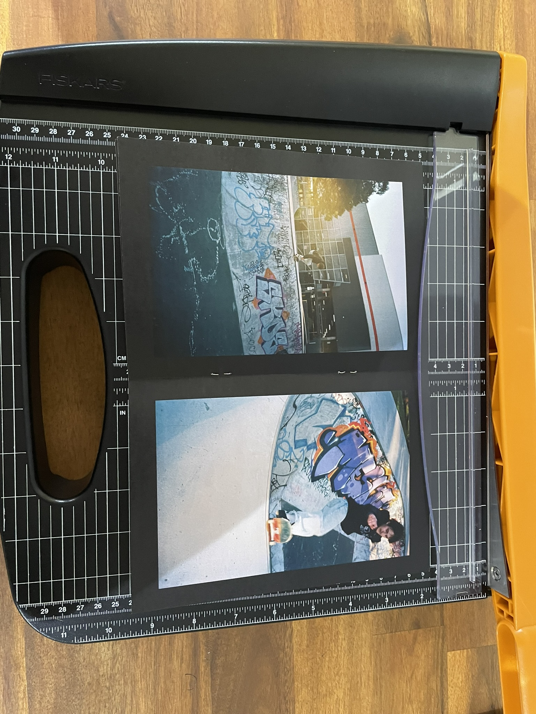

Modified Treatment
Act 1
The narrative opens with an impressionable teenage walking into a skate shop for the first time. He’s seen staring in awe at the TV in the shop that’s playing classic skate videos for customers to enjoy whilst shopping, browsing the beginner skateboards and learning about all the skateboard parts he can buy. Seeing his infatuation with the hobby a shop employee offers him an old skateboard they had laying around the shop for him to get a feel for the sport. The protagonist eagerly accepts the gift and heads straight to the local skatepark.
At the skatepark the protagonist can be seen finding his feet at skateboarding, trying out some beginner tricks and learning the ropes as he obviously struggles with the technical aspects of the sport, but has total commitment to improving. In between shots of the protagonist skateboarding he’s pictured texting friends about his new found love for the sport and excitement over free skateboard, even planning to go skating with friends already into skateboarding over the following days.
Act 2
Returning to the skatepark alone after some time, the protagonist has spent countless hours practicing in the time since he’s received the skateboard. He’s shown executing more technical tricks with ease as he rolls around in his now worn out clothes, it’s become clear of his deep passion for the sport. This visit however, the protagonist isn’t seen talking to friends in any shots on his phone, instead opting to turn his device onto silent, ignoring the friends he was initially so keen to go skating with.
As his skateboarding session comes to an end, the protagonist is seen rolling up to the big stair set of the skatepark, only to stop last second, unsure of his ability to successfully land a trick down it, he dreams of becoming a pro skateboarder by filming himself land it. This thought lingers with the protagonist as he walks past the skate shop, past closing hours as he’s been out skating late, once again staring into the TV through the window in awe of the pro skateboarders it pictures. This continues even later into his day as he sits around in a carpark watching skate videos on his phone as he continues to practice late into the night.
Act 3
Now completely obsessed with the idea of landing a trick down the daunting stair set in hopes of going pro, the protagonist arrives at the skatepark and immediately sets up his phone to record himself as he skips any warm up and begins size up the obstacle. The protagonist throws himself down the drop slamming onto the hard pavement in front of his phone, only to get back up and is pictured repeating the same painful routine over and over.
After much struggle the protagonist launches off the top of the stair set, positioned perfectly over the skateboard, moments away from settling his obsession and landing the trick that plagued his thoughts since the moment he imagined it. The protagonist hits the ground snapping his worn out deck, crushing his ankle in the process. Laying in pain he’s pictured screaming from the agony with his phone by his side, barren of any contact from his seemingly close friends. the protagonist clutches his leg as he realises the real cost of his actions in not just physical harm but the self-isolation he’s ignorantly sent himself into, now being left to fend for himself.
Audience Feedback
Is the narrative coherent?
I think your narrative and the story line’s progression is relatively clear, but the act annotations would make it easier for audiences to understand.
It’s really clear - especially laid out in order like they were, I didn’t have any trouble understanding the narrative.
Yes, it makes a lot of sense viewing it like this and I think that you’ve done a great job adhering to your narrative statement that you described.
It’s clear that the protagonist gets obsessed with skateboarding and is doing all he can to improve, just not entirely sure if it’s clear that it’s an obsession, maybe if you made it clear that he’s ignoring his friend by showing that there’s a ton of missed notifications or something along those lines, again that’s up to you.
The narrative is recognisable, although it would probably be a lot better once there are the annotations. The change in the outfit is an interesting element.
For a collection of photos, I think it clearly and coherently show’s us your narrative in a way that’s easy to follow.
I understand that a guy goes into a store, buys a skateboard, does some tricks and injuries himself. I think if you want to make it his obsessiveness with skateboard maybe implement a few photos that explain that. Like the phone photo could have a bunch of messages missed or something like that
It was clear after you told the narrative but without that information it is a bit unclear - so the annotations you mentioned would be added hopefully will help with that.
For the most part its pretty coherent, its a bit unclear that he is neglecting his friends. maybe more shots of him receiving notifications and ignoring it.
Sort of?? It’s not really that clear, but the images link together if that makes sense. Your story is shown, but you need an in-depth explanation of what is happening.
Are there improvements that could be made by cropping any photos?
No. They all are laid out fine, I can’t remember if there are any specifically that need to be changed just mostly making sure the key elements take up most of the photo.
Cropping could bring more emphasis on the phone but otherwise idk.
To be honest I don’t think that you should crop any photos because at the moment it has an early 2000s feeling and I think that the composition aids to that. If you really want to crop something maybe consider using the rule of thirds for a more aesthetic shot but up to you. Again, I don’t think it needs any.
I’m not really sure I think the images work fine the way they are.
Overall, I think that the photos don’t necessarily need any cropping, but if you did decide to crop some of the background out it wouldn’t take away from the final photos.
I think some of them could be cropped closer to the figure, like removing some of the trees and unnecessary background elements.
I don’t think much cropping is needed. I like the negative space in some of the photos, but (unless it’s not what you are going for) I think that you could crop some of the photos so that there is more of a focus on the character, especially when he becomes obsessed, so that it appears that he has got that extra kind of tunnel vision.
I’m unsure tbh on how you could improve. Nothing really stuck out to me where improvement could be made, I think you’ve done a lot well all around. (I’m also not a photography genius so I don’t have the greatest eye for criticism in this sense)
A feel if you want to take away some photos, you could take away the one or two that were doing the tricks. But that is if you want to take some away, I believe that the amount of photos are fine.
Depending on how you present it you might want to crop so that the subject is bigger, I had to really get close and squint to notice some things. But if you intend to present in a way where the audience can pick it up and bring it close to them then I don’t think it is a problem.
Are there any further improvements I could make?
Just making sure your narrative is clear (unless you want it to be unclear) and maybe make the images a bit bigger, I know printing photos makes awkward sizes but they’re just a bit small. Overall, the style of the images is really cool, but the narrative is a bit unclear, and the details (like the messaging) get lost. The idea is really cool though!
More focus on the neglecting everything else, maybe shots of him ignoring people.
Maybe you could do some colour grading because the warm lighting of the shop is very much contrasted by the cold lighting of the light. Up to you with if you want that contrast but personally I’d try and balance it out.
Maybe some trials with editing the lighting or adding filters to see if it will help boost the images. Could try and make the screen lighter on the phone through this so it is easier to see what is on the phone.
I think making it more obvious that the protagonist is ignoring his friends/other aspects of his life would make the obsession clearer for audiences who don’t previously know the narrative outline. Other than that, I think it’s good!
All the suggestions that I would have made would work out with the method of exhibition that you described, so no I think its great
Once again, I think there’s a lot done right with your photo’s. I think they came out well, tell a clear narrative, and catch a certain vibe/aesthetic that remains consistent throughout. There might be some nitty gritty stuff that could be improved on but there was nothing that was overly noticeable for me that could be Improved on.
I think the things I have said above are apart of the general feedback, maybe make it seems like he is isolating away from his friends, because it doesn’t really seem like he is addicted or obsessed as you stated in the main idea o the photos.
If you wanted to keep it more concise you could remove one of the shots of lying on the ground with the broken skateboard. Unless I’m missing something it makes me question why there are two shots of the same thing which might distract from your original intention.
Maybe elaborate a bit more on the narrative with the images alone, otherwise the images look pretty good, and the story is coherent.
Post-Production
To layout my zine from the scanned film photos I’ve chosen to use Adobe InDesign as it will handle the complex print configuration I require.
I started by creating a new document with 24 pages (including covers) to layout my chosen 22 photos for the final product The setup for my zine layout is configured to be an A5 page size with a large margin around each edge to frame the images and provide ample space act titles. Additionally the document is configured with a ~3mm bleed to allow cropping whilst still keeping the pages black background fill to neatly fill the edges. For my covers and act titles I’ve chosen to use the free and open source font VG5000 from Velvetyne, a french typography organisation as it provides a large selection of 8 bit accent glyphs and characters to draw visual interest to my zine. https://gitlab.com/velvetyne/vg5000 The pages of my zine are laid out into spreads in the software with a single shot per page, fit along the x axis to the set page margins. As some of the shots featuring a phone throughout the narrative came out invisible on the film scans I edited them in photoshop with screenshots of a phone screen overlaid onto the original scan. I started by drawing a mask to the phone screen in the image, including a large feather as the original screen still works around the edges, then mapping out the corners of the screenshot to the corners of the mast to get the correct perspective on the image. To effectively blend the new screen onto the image I converted the masked screenshot into its own smart object, allowing me to apply a noise modifier on top of the layer to match the natural grain produced from the film. Then with the use of the screen blending option, lowering the opacity of the screenshot, and an exposure modifier, I composed the shot to highlight the phone screen, but still let its reflection shine through so as to not look too fake. The print setup for the zine required multi page per sheet printing in order to efficiently produce the A5 pages, InDesign provided some options for this need with configuration for printers marks such as crops, registration and colour bars, which I later used in the binding process. On my first test print I trialled a 4-up print (4 pages per side) on and A4 sheet to test its effectiveness before committing to an A3 print, however I found the cropping and stapling process to be significantly harder to align. To account for this discovery in the test run I opted to print a more traditional 2-up layout which fits 4 A5 pages to each double sided A4 sheet. This proved a lot easier to work with, in part due to my final paper stock choice of uncoated 80gsm sheets for the 5 inner pages and a sing 200gsm sheet for the cover page (and first / last picture as the zine is designed as a self cover product)  To bind the final Zine I used a long arm stapler to reach the spine of the a5 size, although the particular stapler I used was quite old and no longer had proper guides to align pages, causing some staples to fall off center.
Reflection Questions
What did you intend to create? Did you achieve your intention?
I intended to create a short narrative zine about skateboarding and self isolation / obsession, featuring a group of friends in a dramatic coming of age genre. I feel that I’ve come close to this intention with my final product although with a modified narrative to account for my unplanned reduction of available cast.
While out on shoot explain one strength and one weaknesses of your management of the production schedule? This can include cast/crew management, locations, equipment, footage etc.
One strength that I had whilst on shoot was casting my protagonist as a talented skateboarder who could consistently land tricks for the expensive film I was shooting on and emulate realistic slams, giving dramatic shots an extra layer of emphasis. One weakness that I had was a very undependable supporting cast that don’t know how to use a calendar or stick to arrangements critical to the production schedule.
Did you use your pre-production plan during the production and post-production phases? How?
Having a pre-production plan set out a clear timeline and set of tasks that I needed to complete throughout the production and post production of my zine, allowing me to properly manage my time and focus more on the process involved.
Did you rely on others while on shoot? What roles did they take on?
I relied on others for acting, however other than that I personally did all of the camera work myself and as my product was print there was no need photo audio assistance or lighting due to the setting of the narrative.
Describe one production and post-production technique/skill that you learnt during this process.
During production I learnt the process of capturing motion blur in camera on 35mm film by framing and tracking the subject in action shots. Throughout the post production of my zine I learnt the techniques of proper ink density management in preparation for printing and how to utilise bleeds with crop marks to get a professional finish on the booklet.